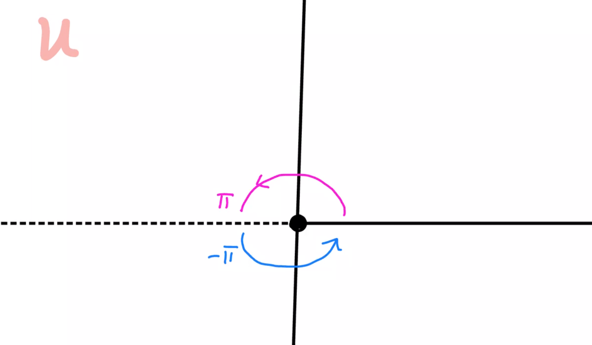
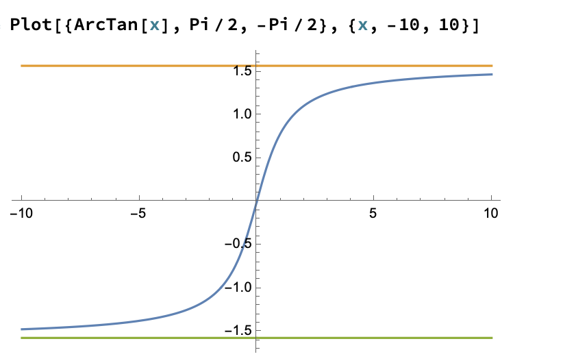
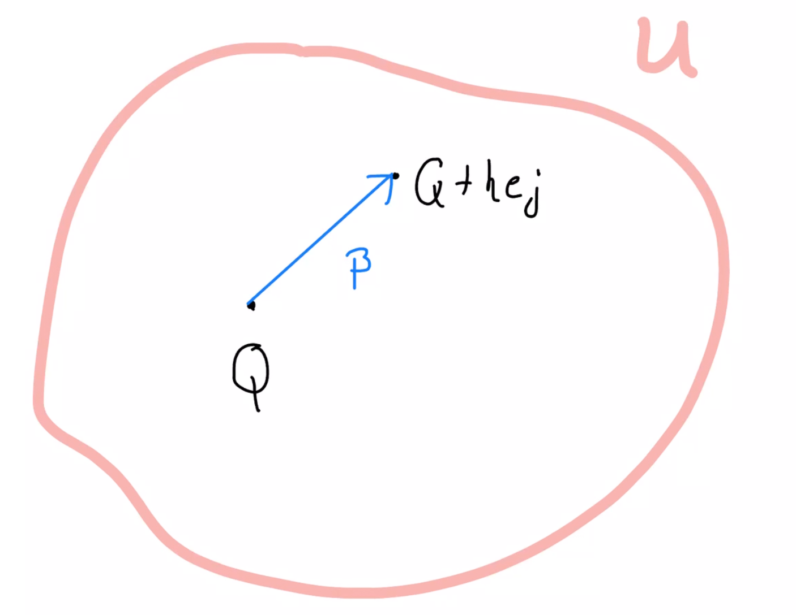

Pensando que las integrales de línea son una generalización
de las integrales usuales de cálculo 2, uno puede preguntarse
si hay resultados análogos a los teoremas fundamentales ahora para
integrales de línea. Antes de continuar recordamos los teoremas
fundamentales.
Primer Teorema Fundamental
Sea \(f:[a,b]\to \mathbb{R}\) una función integrable en \([a,b]\).
Dado \(c\in [a,b]\) definimos
\[
F(x)=\int_c^x f(t)dt
\]
Entonces \(F'(x)\) existe para todo \(x\in (a,b)\) para el cual
\(f\) sea continua en \(x\), y en este caso se cumple
\[
F'(x)=f(x)
\]
En particular, si \(f\) es continua en \([a,b]\), \(F'=f\). En este caso
se puede pensar que el Primer TF nos asegura que para cualquier función
continua podemos encontrar una antiderivada. En el contexto de
campos vectoriales, primero tenemos que decir cuales
son las antiderivadas. Una vez hecho esto el Primer TF va
a decir que toda 1-forma ó campo continuo admite una antiderivada.
Ahora vamos al Segundo Teorema Fundamental.
Segundo Teorema Fundamental
Supongamos que \(f:[a,b]\to \mathbb{R}\) es continua en
\([a,b]\). Si \(G:[a,b]\to \mathbb{R}\) es diferenciable
en \((a,b)\) y \(G'(x)=f(x)\) para toda \(x\in (a,b)\), entonces
\[
\int_c^d f(x)dx=G(d)-G(c)
\]
para cualesquiera puntos \(c,d\in (a,b)\).
El Segundo TF es muy práctico, pues si de alguna forma conocemos
una antiderivada, entonces la integral se calcula muy fácilmente.
En el caso de integrales de línea el Segundo TF va a tener la misma
conclusión, sólo que es un poco más elaborada pues involucra
trayectorias, ciertos abiertos especiales (conexos) y unas funciones
apropiadas (funciones potenciales).
Así pues, tenemos que empezar a ver las definiciones preliminares
para entender los Teoremas Fundamentales en el mundo de las
integrales de línea. Empezamos con la definición de conjunto conexo.
Definición
Un conjunto abierto \(U\subseteq \mathbb{R}^n\) se llama
conexo por trayectorias, o por simplicidad conexo,
si para cualesquiera dos
puntos \(P,Q\) en \(U\), existe una trayectoria suave
a trozos \(\alpha:[a,b]\to \mathbb{R}^n\) que satisface:
para todo \(t\in [a,b]\), \(\alpha(t)\in U\),
\(\alpha(a)=P\), \(\alpha(b)=Q\).
Los conjuntos conexos son los que se pueden pensar
de una sola pieza.
La primera condición dice que, toda la trayectoria debe de quedarse
dentro de \(U\). Otra forma de decirlo es que la traza de la curva
está totalmente contenida en \(U\) lo cual puede denotarse
\(\alpha\subset U\), aunque es una buso de notación.
La segunda condición se puede leer como que la curva empieza en \(P\) y termina en
\(Q\).
Un conjunto abierto se llama disconexo si se puede
esribir como la unión disjunta de dos o más subconjuntos
abiertos conexos y no vacíos.
Existe una definición más general que la dada en
Definición 6.2 de conjuntos conexos.
(ver por ejemplo
conexidad
en espacios topológicos). Afortunadamente, para conjuntos
abiertos estás dos definiciónes son equivalentes. Por lo tanto
nos restringiremos sólamente a conjuntos abiertos y
conexos .
Los conjuntos abiertos y conexos son los que van a reemplazar a los
intervalos de la forma \((a,b)\).
Nota que, por vacuidad, el conjunto vacío es conexo, pero en la
mayoría de los casos siempre vamos a tratar con conjuntos
abierto, conexos y no vacíos.
Ejercicio
Para los siguientes subconjuntos abiertos de \(\mathbb{R}^2\)
determina cuales son conexos o disconexos. Para los que sean
conexos explica cómo se encuentra una trayectoria que una
dos puntos en el conjunto.
Sugerencia: haz unos dibujos.
Nota: para describir las trayectorias no hay que ser formal en este ejercicio.
Ejercicio
Sean \(U_1,U_2,\dots, U_n\) abiertos conexos y no vacíos. Prueba
que si cualesquiera dos tienen intersección no vacía entonces
la unión \(\cup_{i=1}^n U_i\) es abierta conexa.
Sugerencia: inicia con dos conjuntos \(U_1,U_2\)
y después usa inducción sobre el número de conjuntos.
Ejercicio
Da ejemplos de dos conjuntos abierto conexos, no vacíos,
tales que su intersección sea:
conexa;
disconexa;
Lema
Sea \(B_r(p)\) una bola abierta centrada en \(p\) y
\(f:B_r(p)\to \mathbb{R}\) una función diferenciable que
satisface \(\nabla f=0\) en \(p\). Prueba que \(f\) es constante en \(B_r(p)\).
Sea \(U\subseteq \mathbb{R}^n\) un conjunto abierto conexo
no vacío y \(f:U\to \mathbb{R}\) una función diferenciable
tal que \( \nabla f=0\). Prueba que \(f\) es constante
en \(U\).
Definición
Un campo vectorial \(\mathbb{F}\) se llama campo conservativo
o campo gradiente si existe una función escalar
diferenciable \(f\) tal que
\(\mathbb{F}=\nabla f\).
Por ejemplo, si
\(\mathbb{F}(x,y,z)=(f_1(x,y,z),f_2(x,y,z),f_3(x,y,z))\)
que \(f\) satisfaga \(\nabla f=\mathbb{F}\) quiere decir:
\[
\partial_x f = f_1, \quad \partial_y f = f_2, \quad \partial_z f= f_3.
\]
A una función escalar \(f\) que cumple
\(\nabla f=\mathbb{F}\) se le llama una
función potencial de \(\mathbb{F}\).
Nota
La funciones potenciales son los que van a jugar el papel de antiderivadas.
Un diferencia importante con el caso 1-dimensional es que la antiderivada
es un "animal" de otra especia. Por ejemplo, \(f(x,y)=x^2+y^2\)
es una función potencial de \(\mathbb{F}(x,y)=(2x,2y)\), nota que
\(f\) es una función escalar pero \(\mathbb{F}\) es un campo vectorial,
así que \(\mathbb{F}\) y su antiderivada son de "distintas especies".
Los ejercicios que siguen se enfocan en funciones potenciales y
campos conservativos.
Ejercicio
Por \(U\) denotamos un abierto no vacío de \(\mathbb{R}^3\). Supongamos
que \(\mathbb{F}=(A,B,C)\) es un campo diferenciable clase \(C^1\) en \(U\).
Prueba que si existe \(f:U\to \mathbb{R}\) diferenciable en \(U\) tal que
\(\nabla f=\mathbb{F}\) entonces
\[
\partial_y A= \partial_x B, \quad \partial_z A =\partial_x C,\quad
\partial_z B= \partial_y C \quad \textrm{en \(U\)}
\]
Ejercicio
La ley de gravedad de Newton dice que la fuerza ejercida
por un cuerpo de masa \(M\) sobre otro de masa \(m\), es un
vector de longitud \(\frac{GMm}{r^2}\) que apunta hacia
el cuerpo de masa \(M\), donde \(G\) es una constante
positiva y \(r\) es la distancia entre los cuerpos.
Posiciona el cuerpo de masa \(M\) en el origen
y por \((x,y,z)\) denota la posición del cuerpo de masa \(m\) y
escribe \(r=\|(x,y,z)\|\). Prueba que
\[
\mathbb{F}(x,y,z)=-\frac{GMm}{r^3}(x,y,z)
\]
satisface las condiciones de la fuerza de gravedad de Newton.
Sugerencia: checa que la magnitud y dirección sean las
adecuadas.
Prueba que la función \(f(x,y,z)=GMm\frac{1}{\|(x,y,z)\|}\)
es una función potencial para \(\mathbb{F}\), llamada
el potencial de Newton.
Sugerencia: prueba que \(\nabla f=\mathbb{F}\).
Ejercicio
Considera el campo vectorial definido en
todo \(\mathbb{R}^3\) por
\[\mathbb{F}(x,y,z)=(f(y),g(z),h(x))\]
donde \(f,g,h:\mathbb{R}\to\mathbb{R} \) son funciones
clase \(C^1\) con \(h\) no constante que satisface
\(h(x)x\geq 0\) para toda \(x\).
Prueba que \(\mathbb{F}\) no es un campo conservativo. Además
prueba que para cualquier \(\alpha\), circunferencia centrada en el
origen contenida en el plano \(xz\), se cumple:
\[
\int_\alpha \mathbb{F}\cdot \alpha >0.
\]
Sea \(U\subseteq \mathbb{R}^n\) un abierto conexo no vacío.
Si \(f,g:U\to \mathbb{R}\) son dos funciones potenciales
de un campo vectorial
\(\mathbb{F}: U\to \mathbb{R}^n\) entonces \(f=g\).
Sea \(g:[0,\infty)\to \mathbb{R}\), cotinua en \([0,\infty)\)
y diferenciable en \((0,\infty)\). Define \(f:\mathbb{R}^2\to \mathbb{R}\) por
\(f(x,y)=g(\|(x,y)\|)\). Prueba que,
para \((x,y)\ne (0,0)\)
\[
\partial_x f(x,y)= \frac{g'(\|(x,y)\|)}{\|(x,y)\|}x,\quad
\partial_y f(x,y)= \frac{g'(\|(x,y)\|)}{\|(x,y)\|}y,
\]
Sugerencia: regla de la cadena a \(f\).
Un campo vectorial \(\mathbb{F}\) en \(\mathbb{R}^2\)se llama
radial si puede escribirse de la forma \(\mathbb{F}(x,y)=R(\|(x,y)\|)(x,y)\),
para alguna función \(R:[0,\infty)\to \mathbb{R}\).
Si \(\mathbb{F}\) es radial con \(R\) continua, prueba que
\(\mathbb{F}\) es un campo conservativo.
Sugerencia: usa el inciso anterior con \(g\)
definida como \(g(r)=\int_0^r R(t)tdt\) para ayudarte a encontrar
una función potencial de \(\mathbb{F}\)
Teorema
Segundo Teorema Fundamental de las integrales de línea
Sea \(U\subset\mathbb{R}^n\) un abierto conexo y \(f:U\to \mathbb{R}\)
una función de clase \(C^1\) en \(U\). Para cualquier
trayectoria suave a trozos, \(\alpha:[a,b]\to \mathbb{R}^n\),
con traza contenida en \(U\) se cumple:
\[
\int_\alpha \nabla f \cdot d\alpha = f(\alpha(b))-f(\alpha(a))
\]
La demostración no es muy difícil y se basa en el Segundo
Teorema Fundamental de Cálculo (de una variable).
Primero vamos a suponer que \(\alpha:[a,b]\to U\)
es una curva suave (sin "picos"). Definimos la función escalar
\(\varphi:[a,b]\to \mathbb{R}\) por
\(\varphi(t)= f(\alpha(t))\). Ya que \(f\) y \(\alpha\)
son diferenciables \(\varphi\) también lo es
y podemos aplicar la regla de la cadena
para obtener que
\[
\varphi'(t)=\frac{\partial f}{\partial_{x_1}}(\alpha(t))
\frac{d x_1}{d t}(t) + \cdots
+\frac{\partial f}{\partial_{x_n}}(\alpha(t))
\frac{d x_n}{d t}(t)
\]
donde escribimos las funciones coordenadas
\(\alpha=(a_1,\dots, a_n)\) y \(\frac{d x_j}{dt}=a_j'\).
Entonces tenemos
\[
\varphi'(t)= \partial_{x_1}f(\alpha(t))a_1'(t)+
\cdots+\partial_{x_n}(\alpha(t))a_n'(t)
\]
donde el lado derecho de la ecuación anterior es precisamente
el integrando la la integral de línea \(\int_\alpha \nabla f \cdot d\alpha\)
por lo tanto
\begin{eqnarray}
\int_\alpha \nabla f \cdot d\alpha &=& \int_a^b \partial_{x_1}f(\alpha(t))\alpha_1'(t)+
\cdots+\partial_{x_n}(\alpha(t))\alpha_n'(t) dt \\
&=&\int_a^b \varphi'(t)dt. \label{Eqn:TFILequation1}
\end{eqnarray}
Por el Segundo Teorema Fundamental de Cálculo, y tomando que
\(\alpha'\) es contina (ya que \(f\) y \(\alpha\) son clase \(C^1\))
tenemos
\begin{equation}\label{Eqn:TFC1aplicado}
\int_a^b \varphi'(t)dt=\varphi(b)-\varphi(a)=f(\alpha(b))-f(\alpha(a))
\end{equation}
Concluimos de \eqref{Eqn:TFILequation1} y \eqref{Eqn:TFC1aplicado}
\[
\int_\alpha df =f(\alpha(b))-f(\alpha(a))
\]
Para terminar vamos a ver el caso cuando \(\alpha\) es suave
a trozos.
Ya que \(\alpha\) es suave a trozos, existe una partición
\(\{a=t_0< \cdots< t_n=b\}\) tal que \(\alpha\)
restringida a \([t_{i-1},t_i]\) es suave. Por el caso anterior,
si \(\alpha_i\) es la restricción a \([t_{i-1},t_i]\), tenemos:
\[
\int_{\alpha_i} \nabla f \cdot d\alpha_j=f(\alpha(t_i))-f(\alpha(t_{i-1}))
\]
de donde se sigue
\[
\int_\alpha \nabla f \cdot d\alpha = \sum_{i=1}^n \int_{\alpha_i}\nabla f \cdot d\alpha_j =\sum_{i=1}^n
f(\alpha(t_i))-f(\alpha(t_{i-1}))=f(\alpha(b))-f(\alpha(a))
\]
donde la primera identidad es la definición de la integral
sobre curvas suaves a trozos y la última es porque tenemos
una suma telescópica.
Nota
Empezamos con el Segundo TF pués es el más fácil de entender,
pues es el que necesita menos construcciones.
El teorema resuelve completamente el problema de calcular
las integrales de línea de campos conservativos o 1-formas
exáctas, pues sólo tenemos que evaluar la función potencial
en los puntos inicial y final de la trayectoria.
Otra consecuencia importante del teorema es que la integral
de línea de campos conservativos sólo depende del punto inicial
y final de la trayectoria. Por eso se les llama campos conservativos,
por que la integral de línea se conserva aún si modificamos la
trayectoria que une el punto inicial y el punto final.
Nota que el teorema NO dice que la integral de línea de campos
conservativos no cambia si cambiamos los puntos inicial y final.
Por ejemplo, si \(\alpha\) une \((0,0)\) con \((1,0)\)
y \(\beta\) une \((0,0)\) con \((0,1)\), el teorema no implica
que \(\int_\alpha \mathbb{F}=\int_\beta \mathbb{F}\) aún si
\(\mathbb{F}\) es conservativo.
Ejercicio
Para los siguientes campos vectoriales \(\mathbb{F}\) prueba que
no son campos gradientes encontrado una
trayectoria cerrada \(\alpha\) para la cual
\(\int_\alpha \mathbb{F}\cdot d\alpha \ne 0\).
Sea \(U\subseteq \mathbb{R}^n\) un abierto conexo
y \(f:U\to \mathbb{R}\) clase \(C^1\) en \(U\). Prueba que:
Para toda \(\alpha:[a,b]\to U\), curva orientada cerrada,
suave a trozos:
\[
\int_\alpha \nabla f \cdot d\alpha =0.
\]
Si \(\beta \) y \(\gamma\)
son dos curvas orientadas suaves a trozos (cuyas trazas
están contenidas en \(U\)) tal que inician en el mismo punto y
terminan en el mismo punto
entonces
\[
\int_\beta \nabla f \cdot d\alpha = \int_\gamma \nabla f \cdot d\beta
\]
Inciso 1
Sea \(\alpha:[a,b]\to U\) curva orientada cerrada suave a trozos. Ya que \(f\) es \(C^1\)
y \(\alpha\) es suave a trozos (contenida en \(U\)) podemos
aplicar directamente el Segundo Teorema Fundamental para integrales
de línea y obtener
\[
\int_\alpha \nabla f \cdot d\alpha = f(\alpha(b))-f(\alpha(a)).
\]
Pero, ya que \(\alpha\) es cerrada \(\alpha(a)=\alpha(b)\),
de donde se sigue que \(\int_\alpha df =0\).
Inciso 2.
Sean \(\beta:[a,b]\to U\) y \(\gamma:[c,d]\to U\) curvas orientadas
suaves a trozos que cumplen \(\beta(a)=\beta(c)\), \(\beta(b)=\gamma(d)\).
Ahora definimos \(\tilde{\gamma}: [c,d] \to U \)
como \(\tilde{\gamma} (t) = \beta(c+d -t)\), por el
Ejercicio 5.5 \(\tilde{\gamma}\)
invierte la orientación.
Por lo tanto por el Lema 5.9
\begin{equation*}
\int_{\tilde{\gamma}}\nabla f \cdot d\tilde{\gamma} = -\int_{\gamma}\nabla f \cdot d\gamma
\end{equation*}
Por otro lado, ya que \(\beta\) y
\(\gamma\) empiezan en el mismo punto y
terminan en el mismo punto \(\beta \vee \tilde{\gamma}\) está bien
definida y es una curva cerrada
(suave a trozos). Entonces por el primer inciso
\begin{equation*}
\int_{\beta \vee \tilde{\gamma}}\nabla f \cdot d(\beta \vee \tilde{\gamma}) = 0,
\end{equation*}
Y por el Teorema 5.31 obtenemos
\begin{eqnarray*}
\int_{\beta \vee \tilde{\gamma}}\nabla f \cdot d(\beta \vee \tilde{\gamma})
& = &
\int_{\beta}\nabla f\cdot d\beta + \int_{\tilde{\gamma}}\nabla f \cdot d\tilde{\gamma} \\
& = & \int_{\beta}\nabla f \cdot d\beta - \int_{\gamma}\nabla f \cdot d\gamma
\end{eqnarray*}
Por lo tanto \(\int_{\beta}\nabla f d\beta - \int_{\gamma}\nabla f \cdot d\gamma = 0\).
Es decir \(\int_{\beta}\nabla f \cdot d\beta = \int_{\gamma}\nabla f \cdot d\gamma\).
Por lo tanto, hemos demostrado que la integral de línea de
\(\nabla f\) es independiente de la trayectoria.
Ejercicio
Prueba que las integrales de línea son independientes
de la trayectoria
y luego usa el Segundo Teorema
Fundamental para calcularlas.
Sugerencia: encuentra una función potencial.
\(\int_\alpha (3x^2e^{-y})dx+(-x^3e^{-y}+y)dy\),
donde \(\alpha\) es cualquier tryectoria
que une \((1,1)\) con \((2,3)\).
\(\int_\alpha (e^x\sen(y))dx+(e^x\cos(y)+(y+1)^2)dy \)
donde \(\alpha\) es cualquier curva que une
\((0,0)\) con \((0,\pi)\).
Sea \(\mathbb{F}(x,y) := (3x^{2}e^{-y}, -x^{3}e^{-y} + y)\),
es claro que \(\mathbb{F}\) es un campo diferenciable. Además si consideramos
la siguiente función \(f(x,y) = x^{3}e^{-y} + \frac{y^{2}}{2}\)
obtenemos que \(\mathbb{F} = \nabla f \), es decir \(\mathbb{F}\) es exácta.
Antes de proseguir con el ejercicio, recordemos cómo se
obtiene \(f\). Recordemos que \(\nabla f=\mathbb{F}\) implica
\[
\partial_x f = 3x^2e^{-y}, \quad \partial_y = -x^{3}e^{-y}+y
\]
Integrando
\begin{eqnarray*}
\partial_x f = 3x^2e^{-y} \Rightarrow
f=\int \partial_x f dx
&=& \int 3x^2e^{-y} dx \\
&=& x^3e^{-y}+F(y)
\end{eqnarray*}
Diferenciando
\[
f=x^3e^{-y}+F(y) \Rightarrow \partial_y f= -x^3e^{-y}+F'(y)
\]
Pero \(\partial_y f= -x^3e^{-y}+y \) por lo que
igualando y despejando obtenemos \(F'(y)=y\) y por lo tanto
podemo tomar \(F(y)=\frac{y^2}{2}\) de lo que se sigue que
\(f(x,y)=x^3e^{-y}+\frac{y^2}{2}\).
Ya que hemos probado que existe \(f\), clase \(C^1\)
con \(\mathbb{F}=\nabla f\), aplicando el
Ejercicio 6.18,
concluimos que la integral de línea no depende
de la trayectoria que une \((1,1)\) con \((2,3)\).
Por último calculemos
\(\int_{\alpha}(3x^{2}e^{-y})dx + (-x^{3}e^{-y} + y)dy\),
donde \(\alpha\) es cualquier trayectoria que une \((1,1)\) con \((2,3)\).
Usando el Segundo Teorema Fundamental de las
integrales de línea obtenemos
\begin{eqnarray*}
\int_{\alpha}\mathbb{F} \cdot d \alpha = \int_{\alpha}\nabla f \cdot d\alpha & = & f(2,3) - f(1,1) \\
& = & 8e^{-3} +\dfrac{9}{2} - \left(e^{-1} + \dfrac{1}{2} \right) \\
& = & 8e^{-3} -e^{-1} + 4
\end{eqnarray*}
Ejercicio
Para \((x,y)\ne (0,0)\) considera el campo diferencial
\[
\mathbb{F}(x,y)=\left( -\frac{y}{x^2+y^2}, \frac{x}{x^2+y^2}\right)
\]
y toma
\[
U=\mathbb{R}^2\setminus \{(x,y): x< 0\}.
\]

Dado un punto \((x,y)\in U\), sus coordenadas se pueden
escribir como:
\[
x=r\cos(\theta), \quad y=r\sin(\theta),
\]
con \(r=\sqrt{x^2+y^2}\) y \(\theta \in (-\pi,\pi)\).
Prueba que \(\theta\) está dado por
\[
\theta(x,y)=
\left\{
\begin{array}{cc}
\arctan(y/x) & y\geq 0, x>0 \\
\pi/2 & y>0, x=0 \\
\arctan(y/x)+\pi & y> 0, x< 0 \\
\arctan(y/x)-\pi & y< 0, x < 0 \\
-\pi/2 & y< 0, x=0 \\
\arctan(y/x) & y< 0, x > 0
\end{array}
\right.
\]
Recuerda que la función \(\arctan\) toma valores
en el intervalo \((-\pi/2,\pi/2)\).

Del inciso anterior prueba que
\[
\partial_x \theta (x,y)= -\frac{y}{x^2+y^2}, \quad
\partial_y \theta (x,y)= \frac{x}{x^2+y^2}
\]
Por lo que \(\theta\) es una función potencial de \(\mathbb{F}\) en \(U\).
Sugerencia: El caso difícil es tomar las
parciales en el punto \((0,y)\), \(y\ne 0\) . Para estos
casos debes probar los siguientes límites latereales:
Para \(\partial_x \theta(0,y)\):
\[
\lim_{h\to 0^+} \frac{\theta(h,y)-\theta(0,y)}{h}=-\frac{1}{y},
\lim_{h\to 0^-} \frac{\theta(h,y)-\theta(0,y)}{h}=-\frac{1}{y},
\]
los cuales puedes probar usando LH'ospital.
Para \(\partial_y \theta(0,y)\):
\[
\lim_{h\to 0^+} \frac{\theta(0,y+h)-\theta(0,y)}{h}=0,
\lim_{h\to 0^-} \frac{\theta(0,y+h)-\theta(0,y)}{h}=0,
\]
los cuales puedes probar usando LH'ospital.
Por el Ejercicio 5.13, si \(\alpha\) es el circulo unitario
recorrido en el sentido positivo
\[
\int_\alpha \mathbb{F}\cdot d\alpha= 2\pi
\]
Sin embargo, por el Segundo Teorema Fundamental
de integrales de línea, la integral de un campo conservativo
sobre una trayectoria cerrada es cero
(ver Ejercicio 6.18 ). ¿Dónde
está el error?
Teorema
Primer Teorema Fundamental de integrales de línea
Sea \(U\subseteq \mathbb{R}^n\) un abierto conexo y
\(\mathbb{F}:U\to \mathbb{R}^n\) un campo vectorial continuo en \(U\).
Supon que las integrales de línea de \(\mathbb{F}\) sólo dependen
del punto inicial y final de la trayetoria.
Fija \(P\in U\). Define la función \(f:U\to \mathbb{R}\) por
\[
f(Q)=\int_\alpha \mathbb{F}\cdot d\alpha
\]
donde \(Q\in U\) y \(\alpha\) es una trayectoria que une \(P\)
con \(Q\) cuya traza esté contenida en \(U\).
Entonces \(\nabla f= \mathbb{F}\), es decir,
\(\mathbb{F}\) es un campo gradiente.
Nota: ya que la hipótesis dice que la integral sólo depende
del punto inicial y final, la curva que se use para definir
la función potencial no va a
ser relevante.
Primero escribimos las funciones coordenadas de \(\mathbb{F}\) como
\[
\mathbb{F}=(F_1,\dots, F_n).
\]
Lo que debemos de probar es que la función \(f\) definida arriba
satisface :
es diferenciable
en \(U\)
y que \(\partial_{x_j} f= F_j\) para toda \(j=1,\dots,n\).
Para probar que una función es diferenciable es suficiente
probar que las derivadas parciales existen y son continuas
(ver por ejemplo
Wikipedia o Bartle, Elements of
real analysis, Teorema 20.7 ó
Teorema 9.10 (cálculo 3) ). Entonces
si probamos las identidades
\[
\partial_{x_j} f= F_j, \quad j=1, \dots, n,
\]
matamos dos pájaros de un tiro pues probamos que,
las parcieles existen y que son continuas (pues cada
\(F_j\) es continiua por suposición del Teorema).
Así pues, fijamos \(j\) y probamos
\[
\partial_{x_j}f(Q) = F_j(Q) \quad \textrm{ para todo \(Q\in U\)}
\]
que, usando la definición de derivada parcial,
es equivalente a probar que
\[
\lim_{h\to 0} \frac{f(Q+he_j)-f(Q)}{h}=F_j(Q)
\]
donde \(e_j\) es el vector canónico con 1 en la entrada \(j\).
Ahora nos enfocamos en el cociente diferencial
\[
\frac{f(Q+he_j)-f(Q)}{h}
\]
donde suponemos que \(h \ne 0\) y es suficientemente chico
para que \(Q+he_j \in U\) (aquí es donde se usa que \(U\) es abierto,
por ejemplo si tomamos \(r>0\) tal que la bola
centrada en \(Q\) de radio \(r\) esté contenida en \(U\)
vamos a pedir que \(|h|< r\) ).
Por la propiedad de aditividad de la integral de línea podemos escribir
\[
f(Q+he_j)-f(Q)=\int_{\beta} \mathbb{F}\cdot d\beta
\]
donde \(\beta\) es cualquier trayectoria contenida en \(U\)
que va de \(Q\) a \(Q+he_j\). En particular podemos tomar
\(\beta\) el segmento de recta que une \(Q\) con \(Q+he_j\) (aquí
usamos la hipótesis que la integral de línea no depende de
trayectoria que una dos puntos dados) :
\[
\beta(t)=Q + t(Q+he_j-Q), \quad t\in [0,1]
\]

Haciendo la cuenta, si escribimos \(Q=(q_1,\dots, q_n)\), tenemos
\begin{eqnarray*}
\beta(t)&=& Q + t(Q+he_j-Q)\\
&=& Q+the_j\\
&=& (q_1,\dots,q_{j-1} , q_j+th,q_{j+1},\dots ,q_n)
\end{eqnarray*}
Por lo tanto, si por \(b_j\) denotamos la \(j\)-ésima función
coodenada de \(\beta\), resulta que \(b_i'=0\) para toda
\(i\ne j\), que \(b_j(t)=q_j+th\) y que \(b_j'(t)=h\).
Por lo tanto al calcula la integral de línea obtenemos
\begin{eqnarray*}
\int_\beta \mathbb{F}\cdot d\beta
&=&
\int_0^1 \sum_{i=1}^n F_i(\beta(t))b_i'(t)dt \\
&=& \int_0^1 F_j(q_1,\dots,q_{j}+th, \dots, q_n ) h dt
\end{eqnarray*}
Antes de proseguir con el cociente diferencial, vamos a
hacer un cambio de variable en la integral anterior. Tomando
\(u=th\), \(du=hdt\) y
\[
\int_0^1 F_j(q_1,\dots,q_j+th, \dots, q_n)hdt
=\int_0^{h} F_j(q_1,\dots, q_j+u, \dots, q_n)du
\]
Para aplicar el Primer Teorema Fundamental de Cálculo más
adelante definimos la función auxiliar
\[
g(h)=\int_0^{h} F_j(q_1,\dots, q_j+u, \dots, q_n)du,
\quad \textrm{ para \(|h|< r\)}
\]
Con esta notación podemos expresar el cocient diferencial como
\begin{eqnarray*}
\frac{f(Q+he_j)-f(Q)}{h}
&=&
\frac{1}{h}\int_\beta \mathbb{F}\cdot d \beta \\
&=& \frac{g(h)-g(0)}{h}
\end{eqnarray*}
El último paso es probar el siguiente límite
\[
\lim_{h\to 0} \frac{g(h)-g(0)}{h}=F_j(Q)
\]
pero, ya que \(F_j\) es continua, por el Primer
Teorema Fundamental del Cálculo obtenemos que
\(g\) es diferenciable y que
\[
\lim_{h\to 0} \frac{g(h)-g(0)}{h}=g'(0)=F_j(q_1,\dots, q_j+0, \dots, q_n)=F_j(Q)
\]
Nota
El Primer TF da, en teoría, una forma para construir
una función potencial, pero nota que la hipótesis fuerte
es que sabemos de antemano que la integral de línea
NO depende de la trayectoria que una los puntos, lo cual
es una hipótesis fuerte de probar. Sín embargo es una
herramienta teórica fundamental. Entre otras cosas da una
caracterización de las 1-formas exáctas (o campos
conservativos), lo que se muestra en el siguiente ejercicio.
Otra observación importante es que en este teorema se puede
ver la necesidad de pedir que el dominio sea conexo pues,
para construir la función potencial, debemos de usar
una trayectoria que una cualesquiera puntos del dominio,
es decir, pedir que el dominio sea conexo.
Ejercicio
Sea \(U\subseteq \mathbb{R}^n\) un abierto conexo y
\(\mathbb{F}\) un campo vectorial donde las funciones coordenadas
son continuas en \(U\). Prueba que
las siguientes condiciones son equivalentes:
\(\mathbb{F}\) es conservativo.
Para toda \(\alpha\), curva orientada cerrada suave a trozos
con traza contenida en \(U\):
\[
\int_\alpha\mathbb{F} \cdot d\alpha=0.
\]
La integral \(\int_\beta \mathbb{F} \cdot d\beta \) sólo depende
del punto inicial y punto final de \(\beta\)
(curva suave a trozos, con traza contenida en
\(U\)).
Considera el campo vectorial
\[
\mathbb{F}(x,y)=\left(Ex+Fy, Gx+Hy\right)
\]
donde \(E,F,G,H\in \mathbb{R}\) son constantes.
Prueba que \(\mathbb{F}\) es conservativo si y sólo si \(F=G\). En caso
de que sea exácta encuentra una función potencial.
Sugerencia: si \(\mathbb{F}\) es conservativo usa la igualdad de las
derivadas parciales mixtas de la función potencial. Si \(F=G\) prueba
que la integral \(\int_\alpha \mathbb{F}\cdot d\alpha=0\)
para toda curva orientada cerrada suave a trozos.
Conclusión
Los dos teoremas fundamentales son dos caras de la misma
moneda. El primero dice que, mientras el integrando sea
continuo (sobre un dominio conexo), siempre tenemos una
función potencial. El segundo dice cómo calcular
la integral una vez que ya tenemos la función potencial.
Otro aspecto importante es que el Segundo Teorema Fundamental
nos da una forma de pasar de un objeto 1-dimensional
(integral de línea) a uno cero dimensional (valuar la
función potencial en el punto inicial y final). El resultado
es profundo pues se va a extender a otras dimensiones y que
finalmente se convertiran en los Teoremas de Green, Gauss
y Stokes.